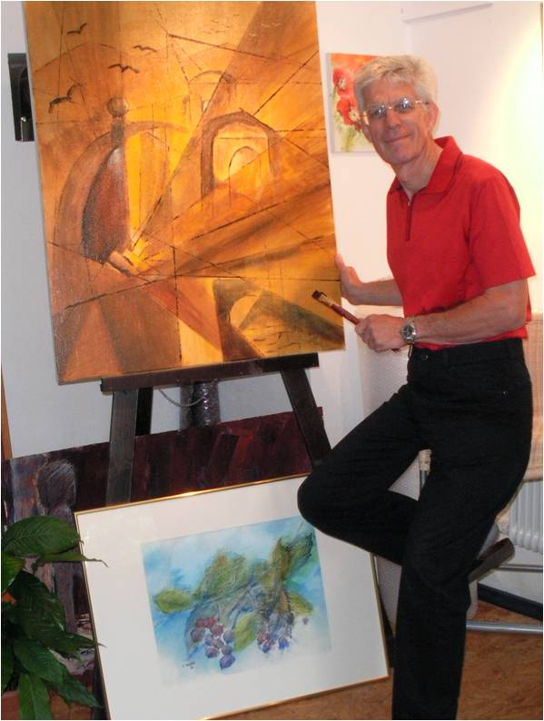

 |
Über mich:
Bernhard Edelsfeld
Künstlerischer Werdegang:
- Unterricht bei Eduard Schmegner, Josef Zenzmaier und Beppo Resch.
- 2006 - 2008 Kunststudium "Bildnerische Gestaltung - Malerei und Grafik" an der Leonardo Kunstakademie Schloss Mattsee bei Prof. Hannes Baier, Abschluss mit Meisterklasse
Veröffentlichungen und Ausstellungen:
- Herausgabe der Kunstbände "Moments in Lyrik und Aquarell" und "Berührungen" gemeinsam mit Gattin Helga Edelsfeld
- Ausstellungen: im ABZ Salzburg, Schloss Mattsee,
Volksbank Salzburg, Privatklinik Wehrle, Pfarrzentrum Rehhof, Itzlinger Hof, Bachschmiede Wals
- Teilnahme an diversen Sammelausstellungen
|